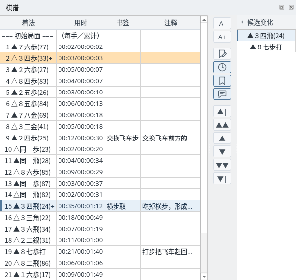
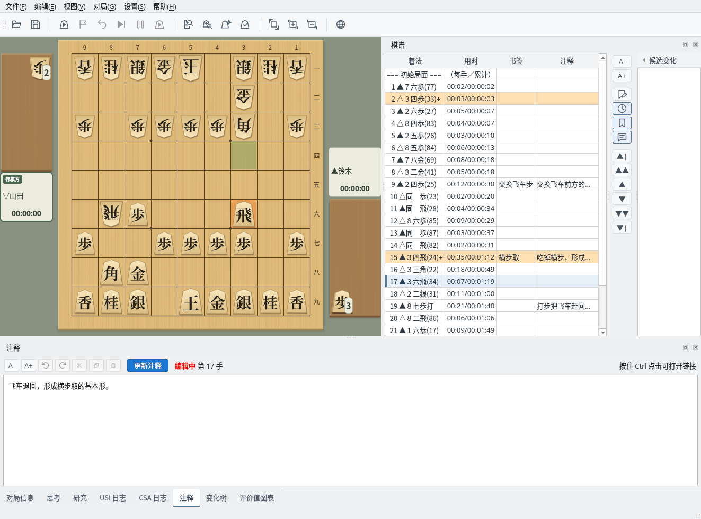
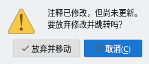
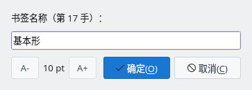
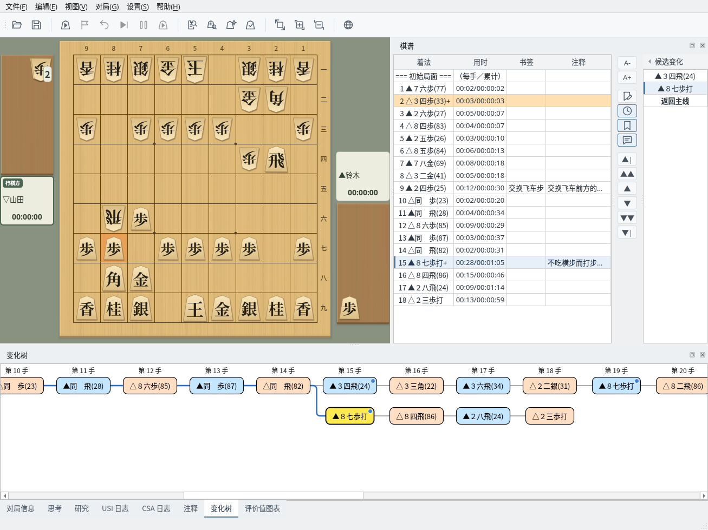
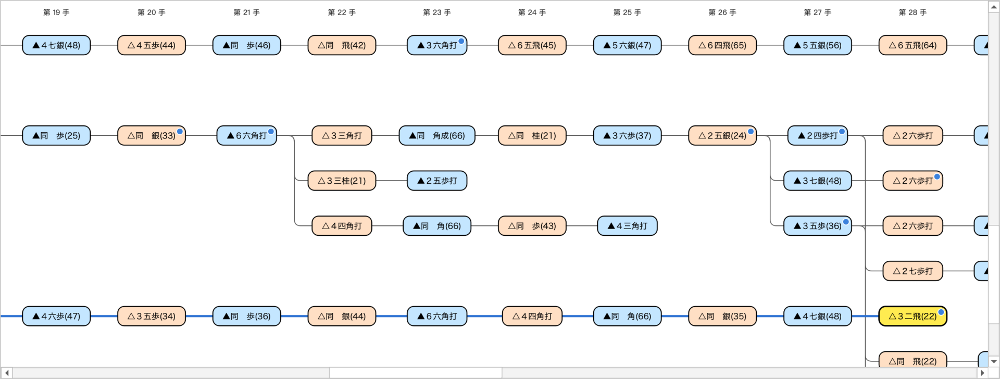

棋谱栏的显示、注释、书签与分支棋谱操作
截图在 Linux 上以简体中文界面拍摄。
以列表显示着法、用时、书签和注释
棋谱栏从初始局面开始依次列出着法、用时（每手／累计）、书签和注释。选择一手后，棋盘会显示该局面，“注释”和“变化树”标签页也会切换到同一手。可以点击行、使用 ↑↓ 键或右侧的按钮选择着法。
有变化的着法背景为橙色，着法末尾带有“+”。最右侧的“候选变化”会在所选着法有其他着法时列出这些候选（点击“◂ 候选变化”可以折叠）。
可以在“设置”→“棋谱与棋盘坐标表示”中切换日文记法（▲７六歩）和西文记法（▲P-7f）。默认跟随界面语言（日文和中文使用日文记法，英文使用西文记法）。详情请参阅多语言支持（英文）指南。

棋谱栏：用时、书签、注释列与第 15 手的候选变化
为所选着法写注释
画面下方的“注释”标签页显示所选着法的注释。修改后会显示“编辑中”，点击“更新注释”（Ctrl+Enter）即可应用到棋谱。应用后的注释也会显示在棋谱栏的注释列中。
注释中的网址会变成链接，按住 Ctrl 点击即可打开。左侧的按钮可以调整字号，以及撤销、重做、剪切、复制、粘贴。注释可以保存在 KIF、KI2、CSA、JKF 格式中。

注释：正在修改第 17 手的注释（编辑中）
如果没有点击“更新注释”就要移到其他着法，会显示确认对话框。点击“放弃并移动”会放弃修改并移动，点击“取消”则停止移动，回到原来的着法。无论是点击棋谱栏、按钮、候选变化还是变化树，都会这样确认。

未更新注释的确认
为想要标记的着法命名
选择一手后点击“编辑书签”按钮，输入书签名称并点击“确定”，书签就会显示在棋谱栏的书签列中。名称为空时点击“确定”会删除书签。
书签保存在 KIF、KI2 格式中，读取时会再次显示。

编辑书签
切换并查看其他变化的着法
选择有变化的着法后，候选变化中会列出主线的着法和其他着法。点击候选即可切换到该变化，棋谱栏也会显示该变化的着法。显示变化时，点击列表最后的“返回主线”可回到主线的同一手。
“变化树”标签页可以一览主线（最上面一行）和各个变化。当前的着法以黄色显示，点击着法即可移动到该局面。当前着法在可见范围之外时，会自动滚动到能看到它的位置。可以保存变化的格式请参阅棋谱管理指南。

变化：在第 15 手选择“▲８七歩打”，并显示变化树
变化树会把变化紧凑地排列在空着的行中。从同一着分出的变化用竖线相连，从开始局面到当前着法的线以蓝色显示。在右键菜单中取消“紧凑显示变化”，则每个变化各占一行。
上方的“第 n 手”标题在纵向滚动时也会一直显示。有注释的着法右上角带有蓝色圆点，鼠标停在着法上会显示该着法和注释的开头部分。
右键点击变化中的着法并选择“折叠此变化”，只保留该变化的第一手，隐藏后续着法和从中分出的变化，并以“▸ +n”显示被隐藏的手数。双击第一手或选择“展开此变化”即可恢复（也可选择“展开所有变化”）。移动到被隐藏的着法时会自动展开。
点击变化树后，可用←→键前后移动，用↑↓键移动到同一手数上下的着法，用 Home／End 键移动到开始局面／该变化的最后一手。可用 Ctrl＋滚轮（macOS 为 ⌘＋滚轮）、触控板双指缩放，或右键菜单的“放大”“缩小”“标准大小（100%）”调整显示大小。显示大小和是否紧凑显示会保留到下次。

变化树：紧凑显示变化，以蓝色显示到当前着法的路径，有注释的着法带蓝色圆点
右键点击变化树中的着法或候选变化中的着法，可以进行以下操作。编辑后棋谱会变为未保存状态。对局中无法使用。
| 菜单 | 作用 |
|---|---|
| 将此变化设为主线 | 将从开始局面到该着的着法设为主线 |
| 上移变化／下移变化 | 调整从同一着分出的变化的顺序（最上面的一方为主线一侧） |
| 删除此着及之后的着法… | 删除该着及其后续着法和从中分出的变化（会先确认，无法撤销） |
不在对局中时，在棋盘上移动棋子，这一着会作为当前着法的下一着记录到棋谱中。已有相同的着法时只会移动到该着，不同的着法则成为新的变化。升变与否会进行确认。显示认输等终局着法时，视为从其前一个局面走出的着法。
定跡窗口的“执行”也会以同样方式记录。添加的着法可以和其他变化一样保存。